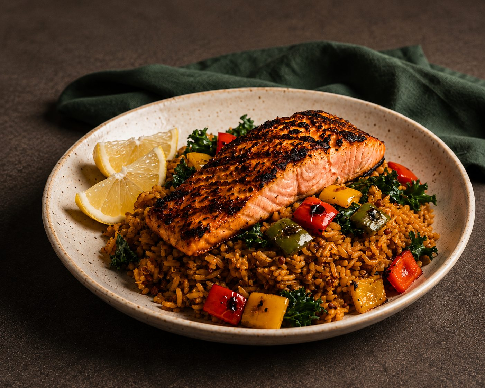
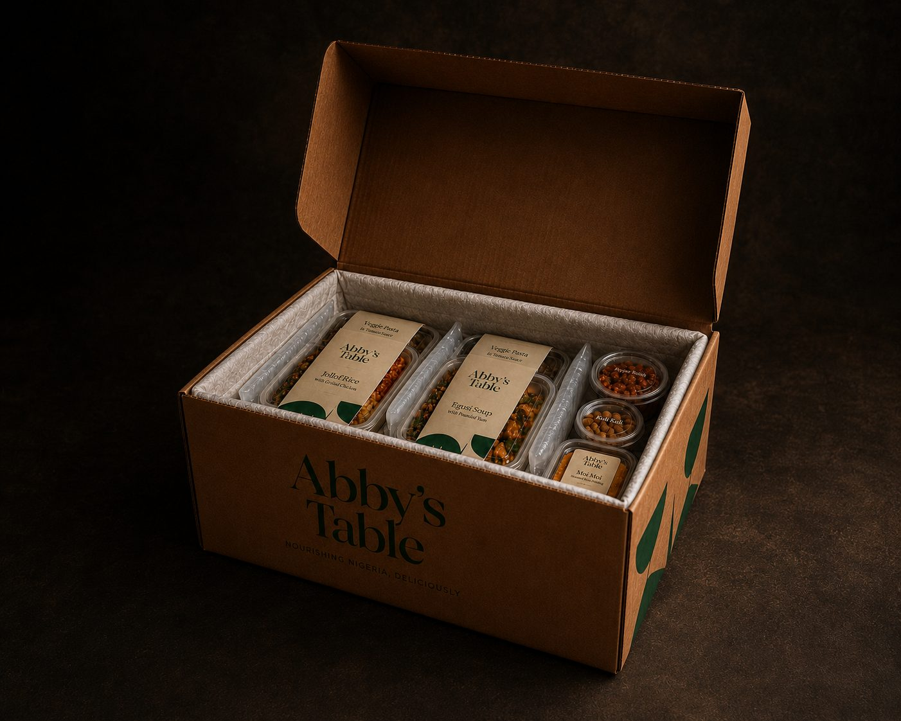
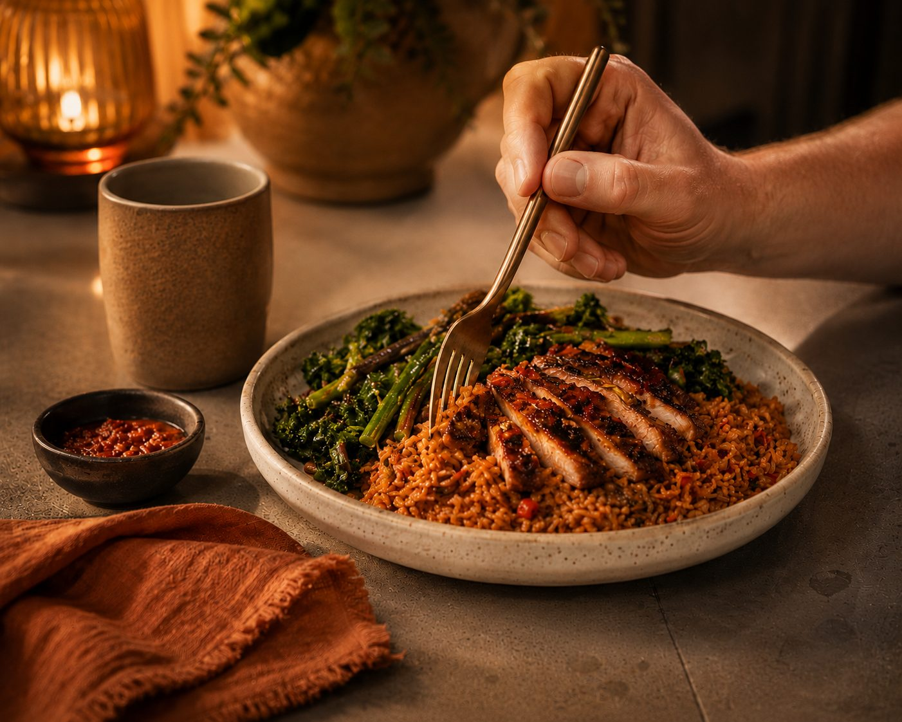

How Abby’s Table works
Choose your box size, fill it with dishes from the menu, and pick a delivery date. We’ll take care of the rest.

Build your box. Fill it your way.
Start with 6, 12 or 18 dishes, or set your own quantity from six upwards. Then choose your dishes and select your portion size.
Pick every dish
Choose your favourites from the full menu.
Make it yours
Choose your portion size where available.
Choose delivery
Pick an available UK nationwide delivery at checkout.
From
{{ price }}
Minimum 6 dishes.
We cook. Real flavour. Nutrition at the core.
We cook with high-quality ingredients, bringing together Nigerian flavours and a modern, nutrition-led approach.
 Cooked from scratch
Cooked from scratch
Quality ingredients
From wild-caught seafood and grass-fed meats to fresh produce and carefully chosen oils.
Flavour built properly
Nigerian flavours built with herbs, spices and aromatics, not ultra-processed shortcuts.
Nutrition at the core
Nutrition shapes how our dishes are developed, from ingredients to portion and balance.
No shortcuts
No commercial seasoning blends, added MSG, seed oils or refined sugars. Cooked to order in small batches.
Freshly cooked. Delivered chilled.
Choose an available date at checkout. We prepare and pack your box in insulated, recyclable packaging, ready for your fridge or freezer.

Packed safely chilledFridge to plate in minutes.
Every dish arrives fully prepared. Follow the simple microwave, oven or hob guidance, then plate and enjoy. No prep, no cooking.
Microwave⬥Oven⬥Hob

Ready when you areNutrition, clearly shared.
Nutrition, ingredients, allergens and heat level are shown on every dish, so you can choose with confidence.
Grilled wild salmon, dirty ofada rice with kale
Ready to fill your box?
Choose at least six dishes, select your portion size, and pick your delivery date.